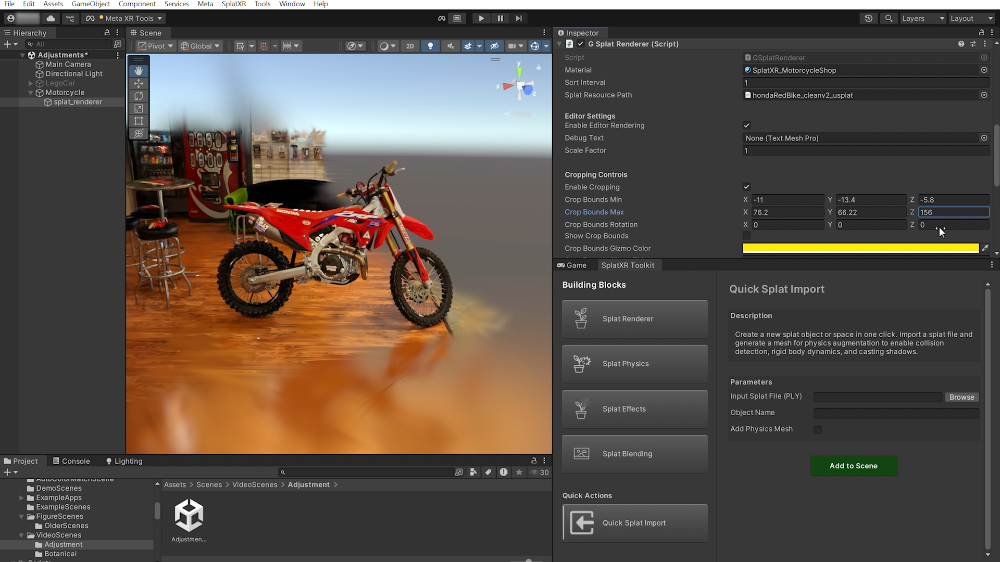
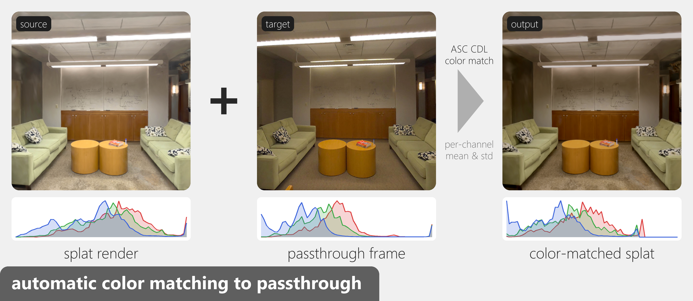

Splat Renderer¶
Core rendering component for displaying Gaussian splats with our stand-alone on-device rendering pipeline.

Purpose¶
This is the foundational building block for splat rendering. Maximum recommended splat count per scene is under 200k for optimal performance, but this may vary depending on target hardware.
Parameters¶
| Parameter | Description |
|---|---|
| Object Name | Name for the splat GameObject. |
| Renderer | Choose between Base Renderer (single PLY file) or LoD Renderer (multiple detail levels for distance-based optimization). |
| Input Splat File (PLY) | (Base Renderer) Path to the splat .ply file. |
| High / Medium / Low Detail Splat | (LoD Renderer) Paths to different detail level PLY files. |
Usage¶
Start with Base Renderer for single splats. Use LoD Renderer when working with large scenes where different detail levels are needed at varying distances to maintain performance. Simply import a .ply file and the toolkit script will create a usplat CSV file, which is automatically assigned to the renderer script.
The building block creates a parent GameObject (named after Object Name) with a splat_renderer child that holds the renderer component and draws the splat. Move, rotate, or scale the parent rather than the child.
Tip
Enable "Remove Outline" in the in-editor viewer when selecting a splat object for smoother editor performance. See the FAQ for more details.
Splats sort for one camera at a time in the editor
Outside Play mode, splats are sorted for the Scene view camera, so they can look unsorted in the Game view, with back splats drawn over front ones. In Play mode it's the reverse: the Game view is sorted and the Scene view isn't. This only happens in the editor. Built apps sort splats correctly. See the FAQ for more details.
LoD distances¶
The LoD Renderer draws one detail level per distance band from the camera. The defaults are below; change them with Lod Distance High and Lod Distance Medium on the LoDRendererSplatXR component of the splat_renderer child.
| Distance from camera | Detail level |
|---|---|
| Up to 2 m | High |
| 2 m – 5 m | Medium |
| Beyond 5 m | Low |
You don't need all three files. If a level has no file, its band falls back to the next coarser level that has one, then to a finer one. For example, with only High and Low assigned, the 2–5 m band uses Low. Removing a file from a level in the Inspector stops that level from rendering.
Splat file format¶
The usplat CSV has a header line, then one splat per line with 13 comma-separated numbers:
x,y,z,opacity,f_dc_0,f_dc_1,f_dc_2,cov0,cov1,cov2,cov3,cov4,cov5
Lines with fewer than 13 columns or non-numeric values are skipped, and the rest of the file still loads. The Console shows a warning with the number of skipped lines and the first one's line number.
Material and Color Controls¶
Each splat gets its own material, saved as Assets/Materials/SplatMaterials/SplatMaterial_<Object Name>.mat and assigned to the splat_renderer child. It uses the SplatXR/SplatShader shader. Editing it changes only that splat, and the original splat file isn't modified.
Select the material (or the splat_renderer child) to adjust its photometric properties in the Inspector: Color Tint, Brightness, Contrast, Saturation, Temperature (cool to warm), and Transparency. Scale Factor scales the splat's size. At their defaults (white tint, 0 temperature, everything else 1), the splat looks unchanged.
The shader applies them in this order: color correction (below), tint, temperature, saturation, then contrast and brightness.
Fixing draw order between splats
Splats within one object are sorted automatically, but separate splat objects (and other transparent objects) are drawn in the order of their material's Render Queue. If one splat incorrectly shows through or covers another, change the Render Queue at the bottom of the splat material's Inspector. Materials with a higher value are drawn later, on top of lower ones. New splat materials start at 3001, just after Unity's default transparent queue (3000).
Auto color correction with passthrough¶
A splat captured at a different time or under different lighting often looks off next to the real room seen through passthrough. The Splat Passthrough Color Adjustment component (SplatPassthroughColorAdjustment) matches the splat's colors to the real environment.

To set it up:
- Select the splat object and choose Add Component > SplatXR > Splat Passthrough Color Adjustment.
- Assign a Splat Render Image: a capture of the splat as it renders, such as a screenshot from Unity.
- Assign a Passthrough Image: a passthrough camera image of the real space the splat should match.
- Assign the splat's material as the Target Material.
- Click Apply Color Correction in the component.
Note
Both images need Read/Write enabled in their texture import settings.
The component compares the mean and spread of each color channel (R, G, B) in the two images and computes an ASC CDL correction (slope, offset, and power) that maps the splat image's colors onto the passthrough image's. Values are clamped to a safe range so a mismatched image pair can't blow out the splat.
How the material is updated¶
The correction is stored on the material, not in the splat file. Apply Color Correction writes the results to the material's ASC CDL Color Correction properties (ASC-CDL Slope, ASC-CDL Offset, and ASC-CDL Power), sets Enable ASC-CDL to 1, and saves the material asset. Because the values live on the material:
- The correction stays applied after you leave Play mode and in builds, even if you disable or remove the component.
- You can undo it with Ctrl+Z (Cmd+Z on macOS).
- You can fine-tune it on top with the color controls above, since the shader applies the correction first.
To compare with and without the correction, set Enable ASC-CDL on the material to 0 (off) or 1 (on). This keeps the computed values. Reset Color Correction in the component returns slope, offset, and power to neutral and turns Enable ASC-CDL off.
Cropping¶
Cropping hides splats outside a box, which is useful for removing background clutter or floaters around a captured object. Open the Cropping Controls foldout on the renderer component on the splat_renderer child:
| Field | Description |
|---|---|
| Enable Cropping | Turn cropping on or off. |
| Crop Bounds Min / Max | Opposite corners of the crop box, in the splat's local space. Default (-5, -5, -5) to (5, 5, 5). |
| Crop Bounds Rotation | Rotation of the crop box, in degrees. |
| Show Crop Bounds | Draw the crop box as a yellow wireframe in the Scene view (while cropping is on). |
Only splats inside the box are drawn, and the splat updates as soon as you change the box. Cropping doesn't change the splat file, so turning it off brings every splat back. It works with both the Base and LoD Renderers.